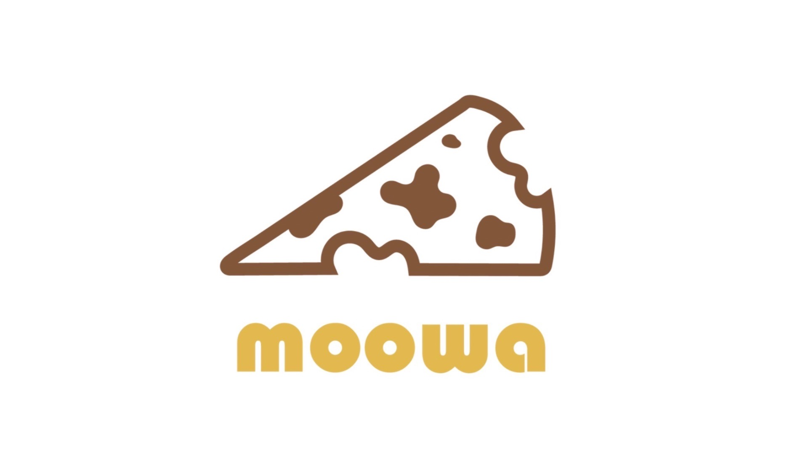

關於 MooWa 🌸
一塊乳酪，一片蛋糕，盛裝著勇敢追夢的甜點魔法。
Our Story
創立背景
其實 MooWa 的誕生也是想了非常久的決定。
在我的同學們都在實習、拿實習學分的 2024 暑假，我左思右想，還是決定鼓起勇氣，讓 MooWa 正式與大家見面！✨
乳酪，是製作乳酪蛋糕最最最重要的關鍵。🧀
我們希望能用最單純的原材料，揉入最真誠的心意，讓每個人都能吃到最美味、最療癒的點心～
Design Concept
Logo設計理念

我們的品牌整體設計抽取了巴斯克蛋糕的溫柔色彩。
Logo 上方的圖樣代表著一塊乳酪，亦是一片蛋糕，更廣義地象徵著各式黛芬妮手作甜點。🍰
我們特別將乳酪的孔洞與乳牛的斑紋做結合，呼應純淨鮮奶與濃厚乳酪的相遇。
最可愛的是，蛋糕上那道小小的咬痕缺口！它不僅讓畫面生動感 up up，同時也悄悄代表著 MOOWA 的 M 與 W 喔！🐾